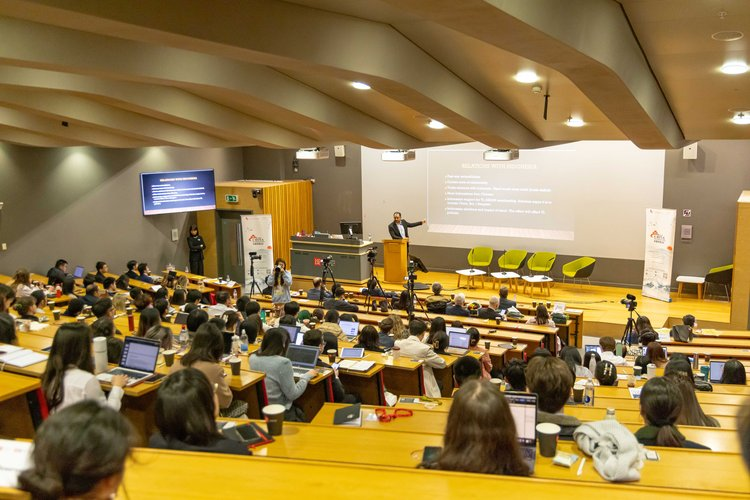

LSE China Development Forum 2025: Geopolitics, Growth, and Global Signals
Forum Date
March 23, 2025
Venue
Old Theatre & Shaw Library, Old Building, London School of Economics
Co-Organized by
LSE China Development Society, with support from GYDA and other partners
About the Forum
First launched in 2009, the LSE China Development Forum (CDF) has grown into one of Europe’s premier platforms for dialogue on China’s development. Each year, CDF convenes over 25 distinguished speakers and 400+ participants, bringing together voices from policy, academia, finance, and business to critically engage with China’s evolving global role.
The 2025 Forum addressed four key dimensions of China’s trajectory: real estate and structural risk, shifting global trade architecture, soft power projection, and the future of tech-led productivity. Hosted at the London School of Economics, it featured speakers from both sides of the Pacific, ensuring multi-regional depth and analytical clarity.
GYDA participated as a supporting partner under its Signal Catcher — Seminar programme. The Forum's high-density briefings—delivered by economists, diplomats, and tech-policy scholars—aligned closely with GYDA’s mission to decode structural signals for the next generation of changemakers. Particular emphasis was placed on cross-cycle macro risk, regional imbalances, and the global interplay of AI, trade, and power.
Strategic Themes
The 2025 LSE China Development Forum offered a full-day sequence of high-density panels unpacking structural forces shaping China’s economic and geopolitical trajectory. From cyclical sector risk to systemic power shifts, discussions provided participants with strategic frameworks—not just stories—across macroeconomics, diplomacy, and technology.
The morning opened with a critical reflection on China’s post-real-estate transition, examining how structural overhangs in property markets are reconfiguring growth models and household balance sheets. Rather than viewing housing as a standalone crisis, the session explored its long-term spillover effects into demographics, debt dynamics, and capital flows.
The geopolitical center of gravity then shifted to the Indo-Pacific. In anticipation of a possible second Trump administration, the forum addressed renewed trade and security pressures in Asia, offering cross-regional perspectives on decoupling, tariffs, and security alignments. This panel contextualized economic policy within strategic deterrence frameworks—an area especially salient for GYDA’s youth cohort preparing for globally entangled careers.
In the afternoon, attention turned to soft power and global discourse. The third session analyzed how China’s narratives—cultural, technological, and diplomatic—are received and reinterpreted across the Global North and Global South. Speakers offered critical lenses on the evolving legitimacy and friction of Chinese influence, particularly in Africa, Southeast Asia, and Western media.
The closing session explored China’s “New Productive Forces”—a term reviving the state’s industrial optimism. The panel interrogated whether AI, frontier tech, and platform economies can drive endogenous growth in the face of shrinking demand and strategic containment. For GYDA’s audience, this session spotlighted not only innovation theory but also the policy conditions needed to sustain real transformation.
The day concluded with a networking reception, fostering further exchange among students, scholars, diplomats, and private sector professionals.